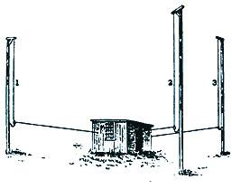
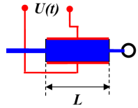
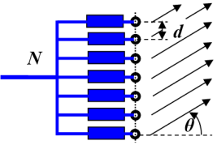

Y18 (2018) — English translation
In a number of works by the 1909 Nobel laureate Karl Ferdinand Braun and his students, methods for constructing antenna systems for directed radiation of electromagnetic waves and their reception are theoretically and experimentally studied. One way is illustrated in the figure. The transmitter is loaded on three vertical antennas installed at the vertices of an equilateral triangle, and in antennas 2 and 3, oscillations begin simultaneously, but with a delay of a quarter period from the beginning of oscillations of antenna 1. Then, according to Brown’s calculations, the maximum radiation will occur in the direction from antenna 1 to the middle of the distance between antennas 2 and 3. Using an antenna switch, you can change the direction of the maximum radiation by 60 and 120 degrees. An experimental test at a military training field near Strasbourg showed a fairly close agreement of the results with the theory.
In a number of works by the 1909 Nobel laureate Karl Ferdinand Braun and his students, methods for constructing antenna systems for directed radiation of electromagnetic waves and their reception are theoretically and experimentally studied. One way is illustrated in the figure. The transmitter is loaded on three vertical antennas installed at the vertices of an equilateral triangle, and in antennas 2 and 3, oscillations begin simultaneously, but with a delay of a quarter period from the beginning of oscillations of antenna 1. Then, according to Brown’s calculations, the maximum radiation will occur in the direction from antenna 1 to the middle of the distance between antennas 2 and 3. Using an antenna switch, you can change the direction of the maximum radiation by 60 and 120 degrees. An experimental test at a military training field near Strasbourg showed a fairly close agreement of the results with the theory.

Radar antennas are an indispensable element of the equipment of space communications systems, air or missile defense systems, airports or seaports. It is clear that in all cases it is necessary to create a narrowly directed “beam”, which must either follow a given object or scan a given solid angle. Changing the direction of the beam can be done mechanically by rotating the antenna. However, antennas can be very bulky, and the required beam rotation speed can be quite significant. In addition, sometimes it is necessary for this speed to change quite quickly (for example, if you need the beam to “slowly” pass the most important directions where the appearance of a “target” is most likely, and “quickly skip” those directions where scanning is still necessary, but the appearance of a “target” is unlikely). In all these cases, mechanical methods of turning the beam become ineffective, and it is necessary to switch to electronic beam control. This problem is solved using $\textit{фазированных антенных решеток}$ (PAR) - systems in which coherent emitters of electromagnetic waves are arranged in an orderly manner, and their radiation is controlled by an electronic circuit. Let's look at some of its elements.
Phase shifter. This is a device for controlled wave phase shift. There are several types of phase shifters, but we will consider only one of them. This is a ferroelectric rod, the dielectric constant of which depends on the applied “transverse” voltage: $\varepsilon=\overline{\varepsilon}\left[1+\alpha U(t)\right]$. The control voltage varies within $-20~\text{В}\leq{U(t)}\leq{+20~\text{В}}$, and the coefficient $\alpha=10^{-3}~\text{В}^{-1}$. An electromagnetic signal from the generator comes to the “input” of the rod. The change in electric field strength in this signal is described by the expression $E_{in} (t)=E_0\cos\omega t$. The signal propagates along the rod and hits the emitter (indicated by a circle in the figure). Refractive index of the rod substance at zero control signal $\overline{n}=8$. The length of the rod is $L=20\pi c/\omega$, where $c$ is the speed of light in vacuum.

Linear chain. Let us now consider $N=100$ emitters to which the same signal is supplied through independent phase shifters. The control voltage is supplied to the phase shifters in such a way that the output signal $(n+1)-\text{го}$ of the phase shifter is ahead in phase of the output signal $n-\text{го}$ by $\Delta{\varphi}=\varphi_0\sin\Omega t$, $(\Omega\ll{\omega})$.

Let the distance between the emitters be equal to half the radiation wavelength: $d=\pi c/\omega=\lambda/2$. Study the radiation of the chain in the plane formed by the chain of emitters and the normal to this chain.
It should be assumed that the directional pattern of each of the emitters is such that in all directions in the plane under consideration, within the limits of $-80^{\circ}\leq{\theta}\leq{+80^{\circ}}$ values, it emits waves with the same amplitude.
In fact, a beam with the intensity found at point $\mathrm C3$ does not always exist during the entire scanning period, and it is not always the only one. Therefore, we introduce two additional characteristics of the antenna: scanning density $\beta=t_\text{раб}/T_\text{ск}$ – the ratio of the duration of time intervals within the scanning period, during which such a beam exists, to the value of the scanning period; scanning multiplicity $K$ – the number of such rays. For example, for the antennas $\beta=1$ and $K=1$ studied in points C2-C5. From a technical point of view, these are the “optimal” values of these characteristics - the parameters of real antennas are usually selected so that their values are exactly these.
For example, for the antennas $\beta=1$ and $K=1$ studied in points C2-C5. From a technical point of view, these are the “optimal” values of these characteristics - the parameters of real antennas are usually selected so that their values are exactly these.
Source: https://pho.rs/p/3046